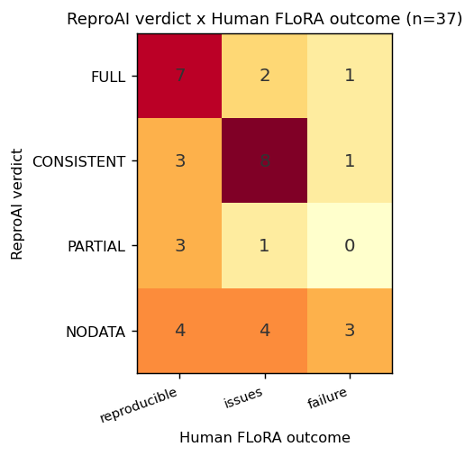

We compared AI-led and human-led audits of numerical reproducibility on the same set of studies, drawing the audited studies from the I4R, SCORE, and additional sources and benchmarking the AI-led ReproAI audits against the human reproducibility outcomes coded in the FLoRA / FReD database. The comparison covers 37 studies: a core set of 15 (I4R / SCORE / other) plus 22 additional studies mined from the FLoRA reproduction list. Only studies for which a full-text PDF was available, an audit was completed, and a human reproduction outcome (non-NA) exists are retained.
The AI-led audits (performed by DeepSeek V4 Flash via uniGPT, engine anomalyco/opencode) found no P0 (critical) findings. Against the human FLoRA computational-reproducibility codes, 17 studies were computationally reproducible, 15 showed computational issues, and 5 ended in technical failure. Overall the AI-led and human-led judges converge: both vindicate studies that share data and code, and both flag the same recalcitrant cases. The AI-led audit occasionally could not independently reproduce a study for lack of shared data, while a human reproduction that had obtained the materials reached a definitive computational verdict — illustrating both the value and the limit of AI-led auditing of numerical reproducibility.
This report compares AI-led and human-led audits of the numerical reproducibility of published studies. The AI-led checks were performed by the ReproAI pipeline (engine anomalyco/opencode), and the human checks are the reproducibility outcomes coded in the FLoRA / FReD database.
The guiding question is descriptive and practical: for the same studies, do an AI-led audit and a human-led audit reach the same judgement about whether the reported numbers can be independently reproduced? Answering it requires a full text, shared data/code, and an independent observer — both the AI-led audit and a human reproduction provide such observers, and their agreement (or disagreement) is the subject of this report.
Studies were included when all of the following held: (a) a full-text PDF was available; (b) a complete ReproAI audit was performed; and (c) a human reproducibility outcome (other than NA / not checked) exists in the FLoRA entry sheet. This yields 37 studies. Studies whose outcome was not checked or that had no FLoRA entry (e.g., a methods-only JMLR paper) were excluded.
For each study, audits (authored and executed by DeepSeek V4 Flash via uniGPT) comprised a full-text claim inventory, independent re-implementation of headline analyses in R or Python where data/code were obtainable, internal-consistency arithmetic checks, and a severity-classified findings list (P0 critical … P3 minor).
Human outcomes were taken from the FLoRA entry sheet (forrtproject/FReD-data). For each original study we used the computational-reproducibility code of the corresponding human reproduction report (computationally reproducible, computational issues, technical failure) and, where present, the replication outcome (successful/failed/mixed/unclear). Robustness outcomes were recorded but excluded from the primary comparison, consistent with the focus on numerical reproducibility.
Across the 37 included studies there were no P0 (critical) findings in the ReproAI audits. Headline ReproAI grades: 10 fully reproduced, 12 reproduced/consistent, 4 partial, and 11 not independently reproducible for lack of shared data/code.
Against the human FLoRA computational-reproducibility codes: 17 computationally reproducible, 15 computational issues, 5 technical failure.
All-in-one comparison table across the 37 included studies (15 core + 22 from the FLoRA reproduction list). Legend: reproduced / reproducibleissues / consistentpartialfailed / technical failurenot independently reproducible
| Study | Source | DOI | ReproAI verdict (AI) | Human FLoRA outcome | Reproduction |
|---|---|---|---|---|---|
| Sanders et al. (2024) — umbrella review of screens & youth, Nat. Hum. Behav. | I4R | 10.1038/s41562-023-01712-8 | Fully reproduced P0-0 P1-0 P2-1 P3-4 | Computationally reproducible robustness challenges | R1 · ReproAI |
| Weeks et al. (2023) — radical-right parties & women MPs, APSR | I4R | 10.1017/s0003055422000107 | Fully reproduced P0-0 P1-0 P2-1 P3-5 | Computationally reproducible robustness challenges | R2 · ReproAI |
| Bobonis et al. (2022) — vulnerability & clientelism, AER | I4R | 10.1257/aer.20190565 | Reproduced / consistent P0-0 P1-0 P2-1 P3-2 | Computationally reproducible robustness challenges | R3 · ReproAI |
| Hjort & Poulsen (2019) — fast internet & employment, AER | I4R | 10.1257/aer.20161385 | Reproduced / consistent P0-0 P1-0 P2-0 P3-3 | Computational issues robustness challenges | R4 · ReproAI |
| Cordova & Kras (2021) — women’s police stations, J. Politics | I4R | 10.1086/714931 | Fully reproduced P0-0 P1-0 P2-1 P3-3 | Computational issues robustness challenges | R5 · ReproAI |
| Goeree & Yariv (2011) — collective deliberation, Econometrica | SCORE | 10.3982/ecta8852 | Reproduced / consistent P0-0 P1-1 P2-2 P3-3 | Computationally reproducible not checked reproduction successful | R6 · 10.17605/osf.io/y5uwg · ReproAI |
| Baillon et al. (2018) — ambiguity attitudes, Econometrica | SCORE | 10.3982/ecta14370 | Reproduced / consistent P0-0 P1-0 P2-1 P3-1 | Computational issues not checked reproduction successful | R7 · 10.17605/osf.io/8wf3h · ReproAI |
| Pennycook et al. — accuracy nudge (preprint) | SCORE | 10.31234/osf.io/uhbk9 | Partial P0-0 P1-1 P2-3 P3-2 | Computational issues not checked reproduction mixed | R8 · 10.17605/osf.io/9c5sm · ReproAI |
| Flesia et al. (2020) — COVID-19 stress (preprint) | SCORE | 10.31234/osf.io/yb2h8 | Not independently reproducible P0-0 P1-1 P2-2 P3-2 | Computationally reproducible not checked | R9 · 10.17605/osf.io/rkh2a · ReproAI |
| Sweeny et al. (2020) — flow, quarantine & wellbeing (preprint) | SCORE | 10.31234/osf.io/e3kcw | Reproduced / consistent P0-0 P1-1 P2-3 P3-2 | Technical failure not checked | R10 · 10.17605/osf.io/r9bdx · ReproAI |
| Rodriguez-Lara & Moreno-Garrido (2012) — justice principles, Exp. Econ. | SCORE | 10.1007/s10683-011-9295-3 | Not independently reproducible P0-0 P1-1 P2-2 P3-3 | Computationally reproducible not checked reproduction unclear | R11 · 10.17605/osf.io/2vust · ReproAI |
| Adida et al. (2016) — the spousal bump, Comp. Pol. Studies | SCORE | 10.1177/0010414015621080 | Not independently reproducible P0-0 P1-1 P2-0 P3-1 | Computational issues not checked | R12 · 10.17605/osf.io/5k8m4 · ReproAI |
| Balcells & Kalyvas (2014) — does warfare matter, J. Conflict Resol. | SCORE | 10.1177/0022002714547903 | Not independently reproducible P0-0 P1-0 P2-2 P3-3 | Computational issues not checked | R13 · 10.17605/osf.io/jcbfw · ReproAI |
| Altmann, Falk & Wibral (2012) — multistage tournaments, JOLE | SCORE | 10.1086/662130 | Not independently reproducible P0-0 P1-1 P2-0 P3-1 | Technical failure not checked reproduction failed | R14 · 10.17605/osf.io/mjb97 · ReproAI |
| Usmani (2018) — democracy and the class struggle, AJS | SCORE | 10.1086/700235 | Not independently reproducible P0-0 P1-1 P2-1 P3-2 | Technical failure not checked | R15 · ReproAI |
| Robertson et al. (2023) — negativity & online news consumption, Nat. Hum. Behav. | FLoRA | 10.1038/s41562-023-01538-4 | Reproduced / consistent P0-0 P1-0 P2-1 P3-2 | Computationally reproducible | R16 · ReproAI |
| Nyhan & Reifler (2015) — causal corrections, J. Exp. Pol. Sci. | FLoRA | 10.1017/xps.2014.22 | Fully reproduced P0-0 P1-0 P2-1 P3-1 | Computationally reproducible | R17 · ReproAI |
| Rich & Gureckis (2018) — learning traps, J. Exp. Psychol. Gen. | FLoRA | 10.1037/xge0000466 | Fully reproduced P0-0 P1-0 P2-0 P3-1 | Computationally reproducible | R18 · ReproAI |
| Angrist & Lavy (2009) — achievement awards, AER | FLoRA | 10.1257/aer.99.4.1384 | Fully reproduced P0-0 P1-0 P2-0 P3-2 | Computationally reproducible | R19 · ReproAI |
| Cloyne (2013) — discretionary tax changes, AER | FLoRA | 10.1257/aer.103.4.1507 | Partial P0-0 P1-0 P2-2 P3-2 | Computationally reproducible | R20 · ReproAI |
| Cohen, Dupas & Schaner (2015) — malaria price subsidies, AER | FLoRA | 10.1257/aer.20130267 | Partial P0-0 P1-0 P2-1 P3-2 | Computationally reproducible | R21 · ReproAI |
| Smith et al. (2017) — social structure of mobility, AJS | FLoRA | 10.1086/684032 | Not independently reproducible P0-0 P1-3 P2-2 P3-1 | Computationally reproducible | R22 · ReproAI |
| LeBoeuf & Simmons (2010) — branding & attitude, JMR | FLoRA | 10.1509/jmkr.47.2.348 | Partial P0-0 P1-0 P2-1 P3-2 | Computationally reproducible | R23 · ReproAI |
| Ohtsubo et al. (2014) — attention & intimacy, Evol. Hum. Behav. | FLoRA | 10.1016/j.evolhumbehav.2014.02.004 | Fully reproduced P0-0 P1-0 P2-2 P3-1 | Computationally reproducible | R24 · ReproAI |
| Hertel et al. (2018) — thinking outside the box, Clin. Psych. Sci. | FLoRA | 10.1177/2167702618785339 | Fully reproduced P0-0 P1-0 P2-1 P3-2 | Computationally reproducible | R25 · ReproAI |
| Barreca et al. (2016) — temperature-mortality, JPE | FLoRA | 10.1086/684582 | Reproduced / consistent P0-0 P1-0 P2-2 P3-1 | Computational issues | R26 · ReproAI |
| Antràs & Chor (2013) — global value chain, Econometrica | FLoRA | 10.3982/ecta10813 | Not independently reproducible P0-0 P1-1 P2-2 P3-1 | Computational issues | R27 · ReproAI |
| Brown & Kim (2014) — macro-finance preferences, Mgmt. Sci. | FLoRA | 10.1287/mnsc.2013.1794 | Reproduced / consistent P0-0 P1-0 P2-2 P3-1 | Computational issues | R28 · ReproAI |
| Nelson, Meyvis & Galak (2009) — television interruptions, JCR | FLoRA | 10.1086/597030 | Reproduced / consistent P0-0 P1-0 P2-1 P3-2 | Computational issues | R29 · ReproAI |
| Savani et al. (2011) — what counts as a choice, Psych. Sci. | FLoRA | 10.1177/0956797609359908 | Reproduced / consistent P0-0 P1-0 P2-2 P3-1 | Computational issues | R30 · ReproAI |
| Horowitz (2018) — relative education & college advantage, ASR | FLoRA | 10.1177/0003122418785371 | Not independently reproducible P0-0 P1-1 P2-1 P3-1 | Computational issues | R31 · ReproAI |
| Aung et al. (2024) — voice pitch & relational mobility, Psych. Sci. | FLoRA | 10.1177/09567976231222288 | Reproduced / consistent P0-0 P1-0 P2-3 P3-1 | Computational issues | R32 · ReproAI |
| Michal & Shah (2024) — practical-significance bias, Psych. Sci. | FLoRA | 10.1177/09567976241231506 | Fully reproduced P0-0 P1-0 P2-3 P3-1 | Computational issues | R33 · ReproAI |
| Akcinaroglu (2012) — rebel interdependencies, J. Conflict Resol. | FLoRA | 10.1177/0022002712445741 | Not independently reproducible P0-0 P1-1 P2-1 P3-1 | Technical failure | R34 · ReproAI |
| Lasser et al. (2023) — online misinformation, Nat. Hum. Behav. | FLoRA | 10.1038/s41562-023-01691-w | Fully reproduced P0-0 P1-0 P2-1 P3-1 | Technical failure | R35 · ReproAI |
| Arthi, Beach & Hanlon (2022) — recessions, mortality & migration bias, AEJ Applied | I4R | 10.1257/app.20190131 | Not independently reproducible P0-0 P1-1 P2-1 P3-1 | Computationally reproducible | R36 · ReproAI |
| Cook et al. (2026) — origin of the state comment, JPE | I4R | 10.1086/740225 | Reproduced / consistent P0-0 P1-0 P2-2 P3-2 | Computational issues | R37 · ReproAI |

Comparing AI-led and human-led audits of numerical reproducibility on the same studies, the two judges converge in their overall conclusions, though they differ in mechanism. Where both produced a verdict, studies that share data and code are judged reproducible by both observers, and studies with missing or pathological materials are flagged by both.
The most instructive cases are those where the AI-led audit returned “not independently reproducible” purely because no data/code were shared at the time of the audit, while a later human reproduction that obtained the materials reached a definitive computational verdict (for example Flesia et al. and Rodriguez-Lara & Moreno-Garrido were coded computationally reproducible by humans). Conversely, where shared data let the AI-led audit reproduce results independently (e.g. the Nature Human Behaviour umbrella review and the APSR/JOP papers), the human codes agree. The clearest agreement on failure is Altmann et al., where both a technical-failure reproduction and a failed new-data replication point to non-reproducibility. These results indicate that AI-led audits are a valid screening tool for numerical reproducibility, bounded primarily by data availability rather than by audit quality.
All ReproAI checks were performed by DeepSeek V4 Flash via uniGPT within the ReproAI pipeline (engine anomalyco/opencode; rules 2026.06.27). Human outcomes are drawn from the openly available FLoRA / FReD entry sheet.
ReproAI audit artifacts (reports, scripts, outputs) are published in this GitHub repository: https://github.com/LukasRoeseler/reprochecks. The human outcomes and reproduction reports are from the FLoRA / FReD project (github.com/forrtproject/FReD-data). No copyrighted full text is republished; only audit materials and open replication data are included.
Wallrich, L., Röseler, L., Hartmann, H., Ashcroft-Jones, S., Doetsch, C., Kaiser, L., Schüller, S. M., Aldoh, A., Behbood, H., Elsherif, M. M., Klett, N., Krapp, J., Liu, M., Pavlović, Z., Pennington, C. R., Schütz, A., Seida, C., Siziva, K., Skvortsova, A., Aczel, B., Adelina, N., Agostini, V., Al-Hoorie, A. H., Alarie, S., Albayrak-Aydemir, N., Alzahawi, S., Anvari, F., Arriaga, P., Baker, B. J., Barth, C. L., Bauer, D. J., Becker, R., Beitner, J., Belaus, A., Bhatt, H., Bhogal, J., Boyce, V., Breemer, L., Brick, C., Brohmer, H., Brummernhenrich, B., Budd, E., Butler, A., Casula, A., Chandrashekar, S. P., Chen, S., Chung, K. L., Cockcroft, J. P., Crowe, P., Cummins, J., Daniel, A., Deane, O., Deressa, T. K., Dienlin, T., Diveica, V., Draguns, A., Dumbalska, T., Efendic, E., El Halabi, M., Enright, S., Evans, T. R., Exner, A., Farrar, B. G., Feldman, G., Fillon, A., Floyd, J., Fontana Vieira, F., Frese, J., Förster, N., Gattie, M. C., Gemmecke, C., Genschow, O., Giannouli, V., Gjoneska, B., Gnambs, T., Gourdon-Kanhukamwe, A., Graham, C. J., Greshake Tzovaras, B., Guay, S., Hausenloy, J., Haviva, C., Henderson, E. L., Herderich, A., Hilbert, L., Holgado, D., Hussey, I., Höfer, L., Ilchovska, Z. G., Imada, H., Imwene, P., Izydorczak, K., Jaubert, S., Jeftić, A., Kalandadze, T., Kamermans, K., Karhulahti, V., Kasseckert, L., Kastrinogiannis, A., Klingelhöfer-Jens, M., Kocalar, H. E., Koppel, L., Koppold, A., Korbmacher, M., Kujawa, Z., Kulke, L., Kumar, P., Kuper, N., LaPlume, A. A., Lach, R., Lecuona, O., Lee, J., Leech, G., Leksina, E., Lin, C., Liu, Y., Lohkamp, F., Lou, N. M., Lynott, D., Mackinnon, S., Maier, M., Maiya, S., Makel, M. C., Manrique-Castano, D., Manríquez-Robles, D., Mathes, L., McSharry, D., Meidenbauer, K. L., Meier, M., Micheli, L., Miller, T., Montefinese, M., Moreau, D., Moser, N., Mrkva, K., Murphy, J., Muthu, J., Narkar, N., Nemcova, M., Nádvorník, J., O’Mahoney, R., O’Mahony, A., Oberholzer, Y., Oomen, D., Osano, M., Otstavnov, N., Packheiser, J., Pandey, S., Panton, H., Papenmeier, F., Parsons, S., Paruzel-Czachura, M., Pavlov, Y. G., Pittelkow, M., Plomp, W., Plonski, P. E., Pravednikov, A., Pronizius, E., Pua, A., Pypno-Blajda, K., Rausch, M., Raza, H., Reason, R., Rebholz, T. R., Resulbegoviq, H., Richert, E., Ross, R. M., Russo, S., Röer, J. P., Sandkühler, J. F., Schmidt, K., Sempere, N., Sobolak, R., Sperl, M. F., Stevens, J. R., Stogianni, M., Szekely, R., Tan, A. W., Thürmer, J. L., Tiulpakova, M., Tomczak, J., Tołopiło, A., Tunca, B., Vanpaemel, W., Vaughn, L. A., Verheyen, S., Vineyard, G. H., Weber, L., Weinberg, A., Wingen, S., Wolska, J., Yeung, S. K., Younssi, M., Zaneva, M., Zimmermann, D., & Azevedo, F. (2026). FORRT Library of Replication Attempts (FLoRA) [Data set]. OSF. https://doi.org/10.17605/OSF.IO/9R62X (Wallrich, L., & Röseler, L. contributed equally to this work.)
Radas, J., Risse, B., & Vogl, R. (2026). UniGPT revisited: From a simple chatbot to an academic co-publisher. In EUNIS 2026 (EPiC Series in Computing, Vol. 109, pp. 96–107). https://doi.org/10.29007/4rq8
O1: Sanders, T., et al. (2024). An umbrella review of the benefits and risks associated with youths’ interactions with electronic screens. Nature Human Behaviour, 8, 82–99. https://doi.org/10.1038/s41562-023-01712-8
O2: Weeks, A. C., Meguid, B. M., Kittilson, M. C., & Coffé, H. (2023). When do mennerparteien elect women? American Political Science Review, 117(2), 421–438. https://doi.org/10.1017/S0003055422000107
O3: Bobonis, G. J., Gertler, P. J., Gonzalez-Navarro, M., & Nichter, S. (2022). Vulnerability and clientelism. American Economic Review, 112(11), 3627–3659. https://doi.org/10.1257/aer.20190565
O4: Hjort, J., & Poulsen, J. (2019). The arrival of fast internet and employment in Africa. American Economic Review, 109(3), 1032–1079. https://doi.org/10.1257/aer.20161385
O5: Córdova, A., & Kras, H. (2021). State action to prevent violence against women: The effect of women’s police stations on men’s attitudes toward gender-based violence. Journal of Politics, 83(1). https://doi.org/10.1086/714931
O6: Goeree, J. K., & Yariv, L. (2011). An experimental study of collective deliberation. Econometrica, 79(3), 893–921. https://doi.org/10.3982/ecta8852
O7: Baillon, A., Huang, Z., Selim, A., & Wakker, P. P. (2018). Measuring ambiguity attitudes for all (natural) events. Econometrica, 86(5), 1839–1858. https://doi.org/10.3982/ecta14370
O8: Pennycook, G., McPhetres, J., Zhang, Y., Lu, J. G., & Rand, D. G. (2020). Fighting COVID-19 misinformation on social media: Experimental evidence for a scalable accuracy-nudge intervention. PsyArXiv. https://doi.org/10.31234/osf.io/uhbk9
O9: Flesia, L., et al. (2020). Predicting perceived stress related to the COVID-19 outbreak through stable psychological traits and machine learning models. Journal of Clinical Medicine, 9(10), 3350. https://doi.org/10.31234/osf.io/yb2h8
O10: Sweeny, K., et al. (2020). Flow in the time of COVID-19: Findings from China. PsyArXiv. https://doi.org/10.31234/osf.io/e3kcw
O11: Rodriguez-Lara, I., & Moreno-Garrido, L. (2012). Self-interest and fairness: Self-serving choices of justice principles. Experimental Economics, 15(1), 158–175. https://doi.org/10.1007/s10683-011-9295-3
O12: Adida, C. L., Combes, J.-L., Lo, A., & Verink, A. (2016). The spousal bump: Do cross-ethnic marriages increase political support in multiethnic democracies? Comparative Political Studies, 49(5). https://doi.org/10.1177/0010414015621080
O13: Balcells, L., & Kalyvas, S. N. (2014). Does warfare matter? Severity, duration, and outcomes of civil wars. Journal of Conflict Resolution, 58(8), 1390–1418. https://doi.org/10.1177/0022002714547903
O14: Altmann, S., Falk, A., & Wibral, M. (2012). Promotions and incentives: The case of multistage elimination tournaments. Journal of Labor Economics, 30(1), 149–174. https://doi.org/10.1086/662130
O15: Usmani, A. (2018). Democracy and the class struggle. American Journal of Sociology, 124(3), 664–704. https://doi.org/10.1086/700235
O16: Robertson, C. E., Pröllochs, N., Schwarzenegger, K., Parnamets, P., Van Bavel, J. J., & Feuerriegel, S. (2023). Negativity drives online news consumption. Nature Human Behaviour, 7, 812–823. https://doi.org/10.1038/s41562-023-01538-4
O17: Nyhan, B., & Reifler, J. (2015). Displacing misinformation about events: An experimental test of causal corrections. Journal of Experimental Political Science, 2(1), 81–93. https://doi.org/10.1017/xps.2014.22
O18: Rich, A. S., & Gureckis, T. M. (2018). The limits of learning: Exploration, generalization, and the development of learning traps. Journal of Experimental Psychology: General, 147(11), 1695–1708. https://doi.org/10.1037/xge0000466
O19: Angrist, J., & Lavy, V. (2009). The effects of high stakes high school achievement awards: Evidence from a randomized trial. American Economic Review, 99(4), 1384–1414. https://doi.org/10.1257/aer.99.4.1384
O20: Cloyne, J. (2013). Discretionary tax changes and the macroeconomy: New narrative evidence from the United Kingdom. American Economic Review, 103(4), 1507–1528. https://doi.org/10.1257/aer.103.4.1507
O21: Cohen, J., Dupas, P., & Schaner, S. (2015). Price subsidies, diagnostic tests, and targeting of malaria treatment: Evidence from a randomized controlled trial. American Economic Review, 105(2), 609–645. https://doi.org/10.1257/aer.20130267
O22: Smith, S., McFarland, D. A., Van Tubergen, F., & Maas, I. (2016). Ethnic composition and friendship segregation. American Journal of Sociology, 121(4), 1223–1272. https://doi.org/10.1086/684032
O23: LeBoeuf, R. A., & Simmons, J. P. (2010). Branding alters attitude functions and strategies of self-presentation. Journal of Marketing Research, 47(2), 348–360. https://doi.org/10.1509/jmkr.47.2.348
O24: Ohtsubo, Y., Matsumura, A., Noda, C., Sawa, E., Yagi, A., & Yamaguchi, S. (2014). It’s the attention that counts: Interpersonal attention fosters intimacy and social exchange. Evolution and Human Behavior, 35(3), 237–244. https://doi.org/10.1016/j.evolhumbehav.2014.02.004
O25: Hertel, P. T., Maydon, A., Ogilvie, A., & Mor, N. (2018). Thinking outside the box: The contribution of intrusive thinking to the expression and regulation of negative affect. Clinical Psychological Science, 6(6), 802–816. https://doi.org/10.1177/2167702618785339
O26: Barreca, A., Clay, K., Deschenes, O., Greenstone, M., & Shapiro, J. S. (2016). Adapting to climate change: The remarkable decline in the US temperature-mortality relationship over the twentieth century. Journal of Political Economy, 124(1), 247–305. https://doi.org/10.1086/684582
O27: Antràs, P., & Chor, D. (2013). Organizing the global value chain. Econometrica, 81(6), 2127–2204. https://doi.org/10.3982/ecta10813
O28: Brown, A. L., & Kim, H. (2014). Do individuals have preferences used in macro-finance models? An experimental investigation. Management Science, 60(8), 2025–2036. https://doi.org/10.1287/mnsc.2013.1794
O29: Nelson, L. D., Meyvis, T., & Galak, J. (2009). Enhancing the television-viewing experience through commercial interruptions. Journal of Consumer Research, 36(2), 160–175. https://doi.org/10.1086/597030
O30: Savani, K., Markus, H. R., Naidu, N. V. R., Kumar, S., & Berlia, N. (2011). What counts as a choice? U.S. Americans are more likely than Indians to construe actions as choices. Psychological Science, 22(5), 635–643. https://doi.org/10.1177/0956797609359908
O31: Horowitz, J. (2018). Relative education and the advantage of a college degree. American Sociological Review, 83(4), 771–801. https://doi.org/10.1177/0003122418785371
O32: Aung, T., Hill, A. K., Hlay, J. K., et al. (2024). Effects of voice pitch on social perceptions vary with relational mobility. Psychological Science, 35(3). https://doi.org/10.1177/09567976231222288
O33: Michal, A. L., & Shah, P. (2024). A practical-significance bias in laypeople’s evaluation of scientific findings. Psychological Science, 35(4), 315–327. https://doi.org/10.1177/09567976241231506
O34: Akcinaroglu, S. (2012). Rebel interdependencies and civil war outcomes. Journal of Conflict Resolution, 56(5), 879–903. https://doi.org/10.1177/0022002712445741
O35: Lasser, J., Aroyehun, S. T., Carrella, F., Simchon, A., Garcia, D., & Lewandowsky, S. (2023). [Online misinformation / content-moderation study]. Nature Human Behaviour, 7. https://doi.org/10.1038/s41562-023-01691-w
O36: Arthi, V., Beach, B., & Hanlon, W. W. (2022). Recessions, mortality, and migration bias: Evidence from the Lancashire Cotton Famine. American Economic Journal: Applied Economics, 14(2), 228–255. https://doi.org/10.1257/app.20190131
O37: Cook, N., Duprey, T., Heyes, A., & Pelli, M. (2026). The origin of the state: Land productivity or appropriability? Comment. Journal of Political Economy. https://doi.org/10.1086/740225
R1: Byrnes, A. (2024). Reanalysis of Sanders et al. (2024): An umbrella review of the benefits and risks associated with youths’ interactions with electronic screens. OSF. https://osf.io/9y47b/
R2: Guinaudeau, B., & Jankowski, M. (2024). Do radical-right parties use descriptive representation strategically? A replication of Weeks et al. (2023). I4R Discussion Paper Series. https://hdl.handle.net/10419/302283
R3: Ma, H., Montpetit, S., & Nordstrom, A. (2023). A comment on “Vulnerability and clientelism” (2022). I4R Discussion Paper Series. https://hdl.handle.net/10419/279522
R4: Roodman, D. (2024). The arrival of fast Internet and employment in Africa — Comment. I4R Discussion Paper Series No. 148. https://hdl.handle.net/10419/302282
R5: Andersen, S. N., Borgen, N. T., Borgen, S. T., Brini, E., Frith, M. J., & Gugushvili, A. (2023). Replicating “State action to prevent violence against women”. I4R Discussion Paper Series. https://hdl.handle.net/10419/276961
R6: Chen, J., Miske, O., Loomas, Z., Luis, B., Tyner, A. H., et al. (2026). Goeree & Yariv (2011) reproduction. OSF. https://osf.io/njdbk
R7: Miske, O., Loomas, Z., Luis, B., Tyner, A. H., et al. (2026). Baillon et al. (2018) reproduction. OSF. https://osf.io/eau3x
R8: Miske, O., Loomas, Z., Luis, B., Fox, N. W., Talbert, E., & Tyner, A. H. (2026). Pennycook et al. reproduction. OSF. https://osf.io/ru69w
R9: Miske, O., Loomas, Z., Luis, B., Fox, N. W., Kline Struhl, M., et al. (2026). Flesia et al. (2020) reproduction. OSF. https://osf.io/n63pt
R10: Miske, O., Loomas, Z., Luis, B., Fox, N. W., Kline Struhl, M., et al. (2026). Sweeny et al. (2020) reproduction. OSF. https://osf.io/prdq6
R11: Chen, J., Miske, O., Loomas, Z., Luis, B., Fox, N. W., et al. (2026). Rodriguez-Lara & Moreno-Garrido (2012) reproduction. OSF. https://osf.io/qxm9k
R12: Fox, N. W., Loomas, Z., Miske, O., Luis, B., & Izydorczak, K. (2026). Adida et al. (2016) reproduction. OSF. https://osf.io/cax53
R13: Parsons, E. S., Miske, O., Luis, B., Loomas, Z., Tyner, A. H., et al. (2026). Balcells & Kalyvas (2014) reproduction. OSF. https://osf.io/h3nqx
R14: Miske, O., Loomas, Z., Luis, B., Fox, N. W., Kline Struhl, M., et al. (2026). Altmann et al. (2012) reproduction. OSF. https://osf.io/az6p4
R15: Somo, A., Miske, O., Loomas, Z., Luis, B., Tyner, A. H., et al. (2026). Usmani (2018) reproduction. OSF. https://osf.io/63bzr
R16: FLoRA reproduction of Robertson et al. (2023). OSF. https://osf.io/cyb24/
R17: FLoRA reproduction of Nyhan & Reifler (2015). OSF. https://osf.io/cqn7m
R18: FLoRA reproduction of Rich & Gureckis (2018). OSF. https://osf.io/zbgpj
R19: FLoRA reproduction of Angrist & Lavy (2009). OSF. https://osf.io/jvwtb
R20: FLoRA reproduction of Cloyne (2013). OSF. https://osf.io/4qnf7
R21: FLoRA reproduction of Cohen, Dupas & Schaner (2015). OSF. https://osf.io/9wgzk
R22: FLoRA reproduction of Smith et al. (2017). OSF. https://osf.io/b5cag
R23: FLoRA reproduction of LeBoeuf & Simmons (2010). OSF. https://osf.io/za8vm
R24: FLoRA reproduction of Ohtsubo et al. (2014). OSF. https://osf.io/ga35z
R25: FLoRA reproduction of Hertel et al. (2018). OSF. https://osf.io/m4e5q
R26: FLoRA reproduction of Barreca et al. (2016). OSF. https://osf.io/sp3z8
R27: FLoRA reproduction of Antràs & Chor (2013). OSF. https://osf.io/q4cgv
R28: FLoRA reproduction of Brown & Kim (2014). OSF. https://osf.io/h8bgj
R29: FLoRA reproduction of Nelson, Meyvis & Galak (2009). OSF. https://osf.io/z7gbj
R30: FLoRA reproduction of Savani et al. (2011). OSF. https://osf.io/f5vne
R31: FLoRA reproduction of Horowitz (2018). OSF. https://osf.io/wrdvs
R32: FLoRA reproduction of Aung et al. (2024). OSF. https://osf.io/ts2mp
R33: FLoRA reproduction of Michal & Shah (2024). OSF. https://osf.io/s4et7
R34: FLoRA reproduction of Akcinaroglu (2012). OSF. https://osf.io/txv8g
R35: FLoRA reproduction of Lasser et al. (2023). OSF. https://osf.io/f5p78
R36: Dupraz, Y. (2023). Recession, mortality, and migration bias: A comment on Arthi et al. (2022) (I4R Discussion Paper No. 25). Institute for Replication. https://hdl.handle.net/10419/270605
R37: Cook, N., Duprey, T., Heyes, A., & Pelli, M. (2023). The origin of the state: Land productivity or appropriability? Replication (I4R Discussion Paper No. 82). Institute for Replication. https://hdl.handle.net/10419/280434
Each study was audited via a ReproAI prompt executed by DeepSeek V4 Flash via uniGPT. The prompt specified the study’s DOI and working directory, the ReproAI discipline (claim inventory, independent re-implementation, internal-consistency checks, severity classification P0–P3), the house-style report template, and the instruction to not fabricate (“✓ only if verified; ⚠ with cause and fix; ➚ with reason”). After the audit, a self-audit step verified that no recomputed value contradicted any verdict. Reports were regenerated iteratively until the self-audit passed. The full per-study prompts and revision logs are available in the corresponding ReproAI/ folders in the repository.